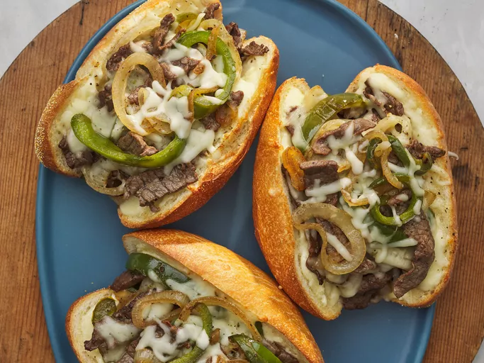

Philly Cheesesteak Sandwich with Garlic Mayo

Description
This is a delicious Philly cheesesteak with mozzarella, peppers, and onion that gets rave reviews. The garlic mayo is both easy and flavorful.
Ingredients
A portion yields 4 servings
- 1 cup mayonnaise
- 2 cloves garlic, minced
- 1 tablespoon olive oil
- 1 pound beef round steak, cut into thin strips
- 2 green bell peppers, cut into 1/4 inch strips
- 2 onions, sliced into rings
- Salt and pepper to taste
- 4 hoagie rolls, split lengthwise and toasted
- 1 (8 ounce) package shredded mozzarella cheese
- 1 teaspoon dried oregano
Directions
- Gather all ingredients.
- Combine mayonnaise and minced garlic in a small bowl. Cover and refrigerate. Preheat the oven to 500 degrees F (260 degrees C).
- Heat oil in a large skillet over medium heat. Sauté beef until lightly browned.
- Stir in bell peppers and onions and season with salt and pepper. Sauté until vegetables are tender, then remove from heat.
- Spread each bun generously with garlic mayonnaise.
- Divide beef mixture into buns. Top with shredded cheese and sprinkle with oregano.
- Place sandwiches on a baking pan.
- Heat sandwiches in the preheated oven until cheese is melted or slightly browned.
Return to Home